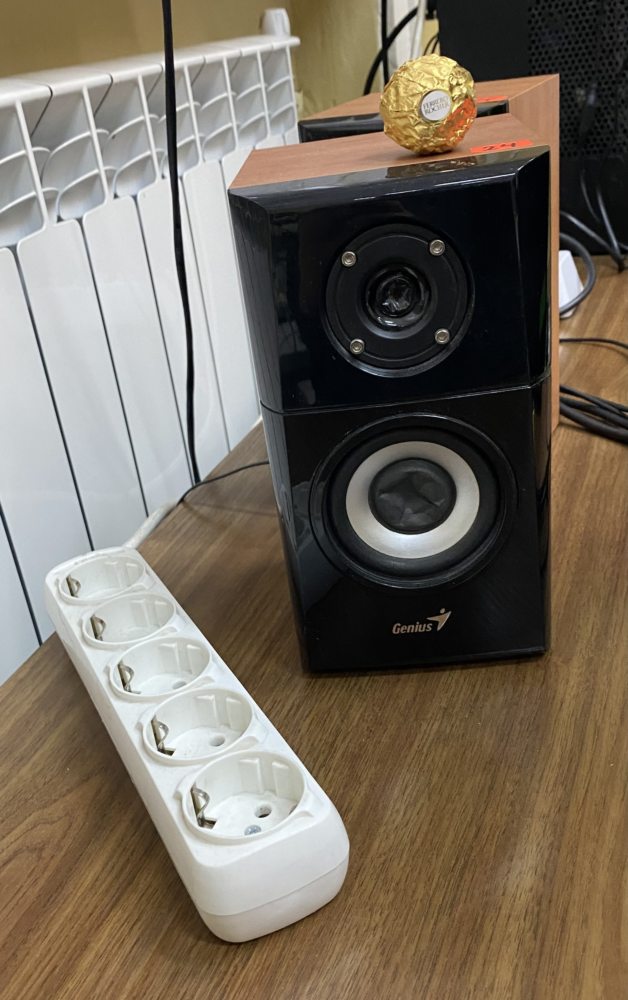
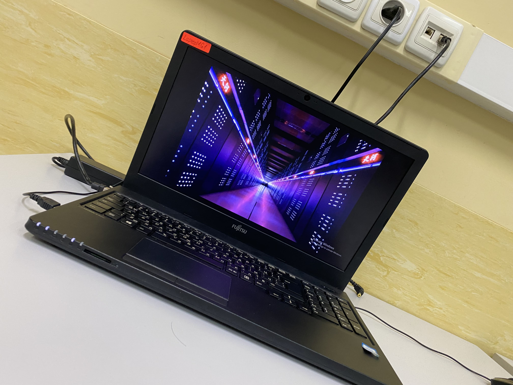
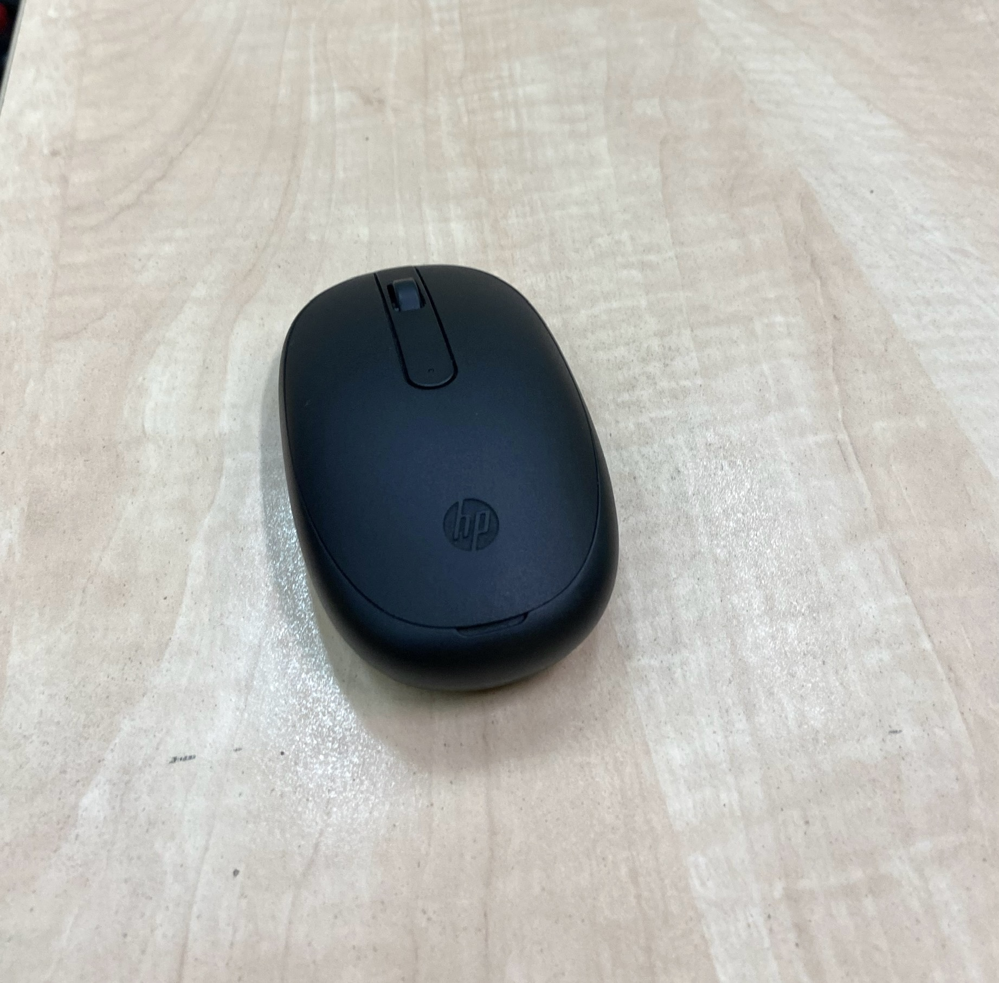
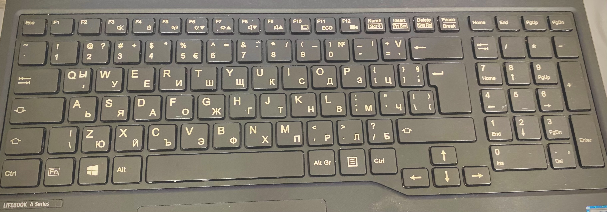
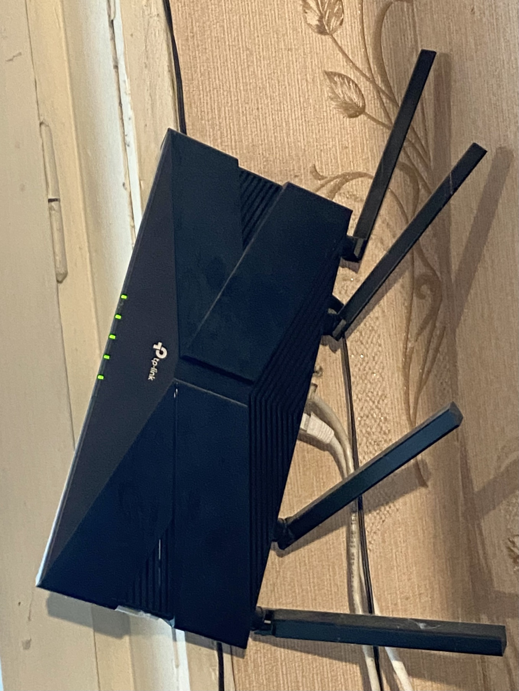
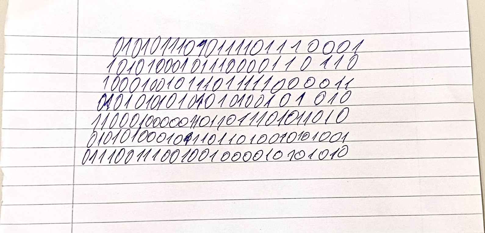
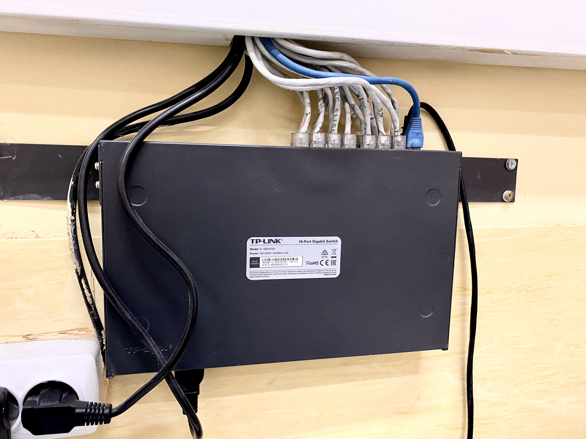
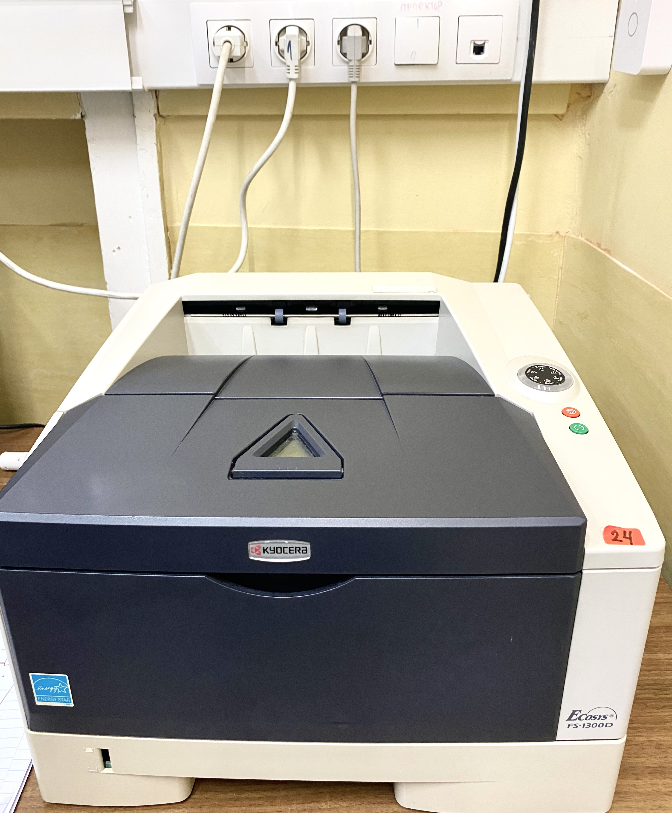
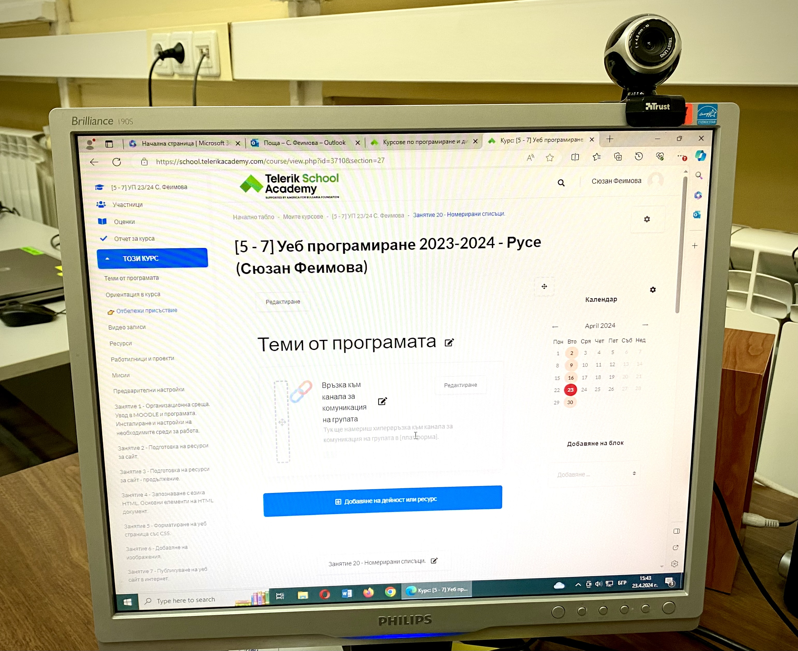
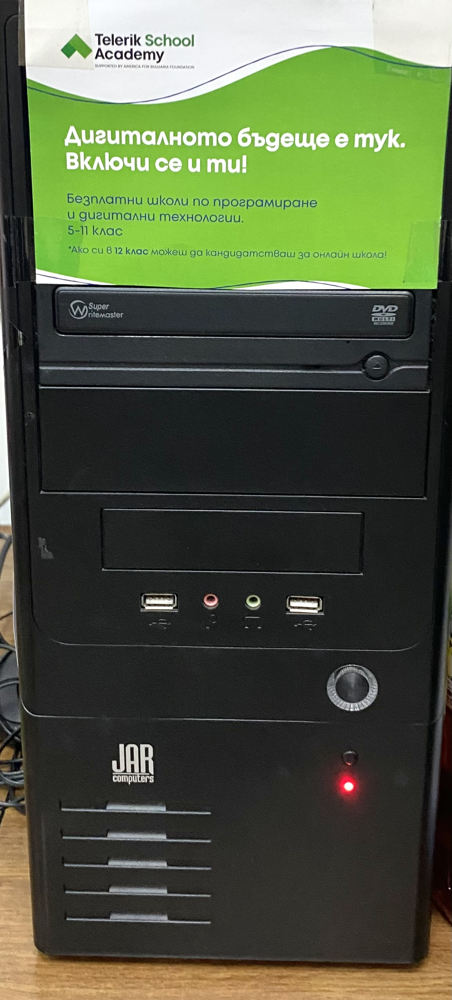

Авторски снимки

Тонколони



Лаптоп
Мишка
Клавиатура

Рутер

Информацията за компютрите



Суич
Принтер
Монитор и камера

Компютърна котия
Автор: Мирослав Радославов Михнев,
5 клас, МГ "Баба Тонка", град Русе
Начало